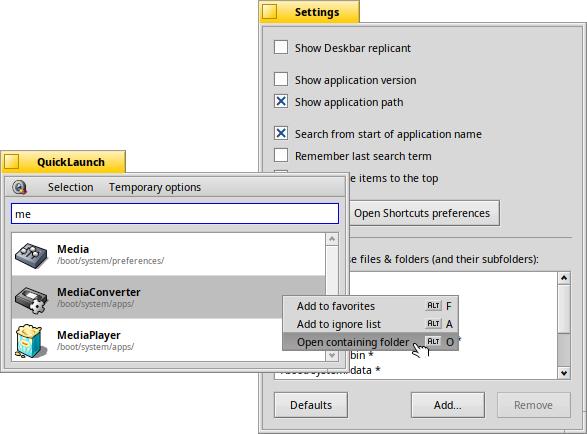
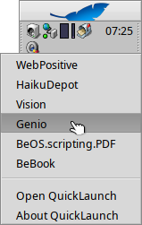

QuickLaunch is a small launcher tool that helps you to quickly start any installed application.
Simply start to enter the name of an application and QuickLaunch will find all programs matching these initial letters and show them in a list. You choose an app from that list with the ↑ ↓ keys and launch it by hitting RETURN. ESC quits QuickLaunch.
Here's the main window after searching for all applications starting with "me" and behind it the settings window when clicking the Setup button (or pressing ALT+S:

In the main window the context menu was invoked via a right-click.
The first item adds the selected app to your favorites which will be shown whenever the search field is empty (key-combo: ALT+F).
The second item adds the app to the ignore list (key-combo: ALT+I; works also with a drag & drop into the ignore list of the setup window). More on that in the setup options discussed below.
The final item opens the app's location in a Tracker window (key-combo: ALT+O or CTRL+RETURN).
The Help button, or pressing ALT+H, opens this ReadMe in the browser.
Your list of favorite applications is shown whenever the search field is empty, e.g. right when you start QuickLaunch.
The background of favorites is slightly tinted yellow and a little yellow star is added to their icon to distinguish them from a regular search result.
You add favorites by right-clicking an app's entry in a search result list and choosing or pressing ALT+F.
Similarly, you remove a favorite again by right-clicking it and selecting or with ALT+R.
You can also create a favorite by dragging a file from any Tracker window onto your favorites' list. Even better: The dropped file doesn't have to be an application. Any file or folder will do. Non-application favorites are tinted slightly green to distinguish them from your app favorites.
The Deskbar replicant can be activated from the Setup window (see below). It installs the QuickLaunch icon into the Deskbar tray, alongside the clock and the replicants of other applications.
A right-click on it also offers quick access to your favorites.
The setup window, invoked with the Setup button or ALT+S:

— puts the QuickLaunch icon into the Deskbar tray. A left-click on it starts QuickLaunch, with a right-click you can start your favorite applications directly from the context menu.
— only really useful when having older and newer versions of an app installed.
— interesting when you have several copies of an application.
— when unchecked, finds all applications with the search term anywhere in their name, not only with those initial letters. Same as starting a search with a '*' as first letter.
— after entering a search term, list the matching favorites first instead of all the results strictly alphabetically.
— starts QuickLaunch with the previous search.
— opens Haiku's Shortcuts preferences where you can add a keycombo to run QuickLaunch.
that you can add and remove from the list with the buttons at the bottom.
You can also right-click an app in the main window's result list to add that specific app to the ignore list or drag & drop any application or folder from Tracker or an app from QuickLaunch's main window into it.
DEL removes the selected items from the ignore list.
If you add a folder instead of a file, QuickLaunch will ignore all the files and subfolders it contains. Those items are marked with a "*" in the list and are printed in italics.
Assign a keycombo to QuickLaunch in Haiku's Shortcuts preferences, like OPT+SPACEBAR, for even quicker QuickLaunching apps.
If you don't want to deactivate the option in general, but just once in a while would like to search within an app name, you can use a '*' as a wildcard. E.g. "*player" will find 'MediaPlayer' and 'MidiPlayer'.
You can create a favorite by dragging any file – not just an application – from any Tracker window onto your favorites' list.
SHIFT+RETURN will keep the QuickLaunch window open after launching the app.
These two folders are ignored by default: /system/add-ons/ and Trash
In other words, applications in Trash are ignored, as well as add-ons.
/system/bin/ used to be ignored, but since especially ported software often ends up in the /bin folder, that is a bad idea. You'll have to remove unwanted commandline apps manually now, i.e. via of the context menu.
- There are two reasons why an application may not be found by QuickLaunch:
- The application isn't located on a BFS partition or the BFS partition wasn't formatted to support queries.
- The application lacks the proper attributes BEOS:APP_SIG or BEOS:TYPE. In that case, ask the app's developer to add it, or try to apply the following tip.
If you happen to use an app or a script that doesn't show up in QuickLaunch (and is in a writable location), you can add these atrributes in Terminal to the app or script:
addattr BEOS:TYPE application/x-vnd.Be-elfexecutable /path/to/your/app-or-script
addattr BEOS:APP_SIG application/x-vnd.anything-unique /path/to/your/app-or-script
QuickLaunch is directly available through HaikuDepot from the HaikuPorts repository.
You can also build it yourself using Haikuporter. The source is hosted at GitHub.
Please use GitHub's issue tracker if you experience unusual difficulties or email your general feedback to me.
I'd be very grateful for further translations for QuickLaunch and other applications at Polyglot.
I have to thank DarkWyrm for some helpful hints and for some of the code I re-used from his RunProgram app and his EscapeCancelFilter.
Equally useful was Robert Polic's EZLauncher of BeNewsletter 3-46 and the help I got on the #haiku IRC channel.
AnEvilYak provided valuable hints and code when I got stuck.
Finally, thanks to everyone that contributed bug reports and translations for QuickLaunch.
The translators:
Catalan (ca) by Davidmp · Chinese (simplified) (zh-Hans) by 玉堂白鹤 · Croatian (hr) by zvacet · Dutch (nl) by no-act, Schrijvers Luc · Esperanto (eo) by Lutrulo, Jakub Fabijan · French (fr) by Briseur, oco27 · Friulian (fur) by tmtfx · Greek (Modern) (el) by blu.256 · Hungarian (hu) by miqlas · Indonesian (id) by mazbrili · Italian (it) by Gabriele Baldassarre, zumikkebe · Japanese (ja) by Murai Takashi · Polish (pl) by KapiX · Norwegian (nb) by Johan Wagenheim · Portuguese (pt) by Victor Domingos, kenmays, louisdem · Portuguese (Brazil) (pt_BR) by Andrei Bosco B. Torres, louisdem · Romanian (ro) by Florentina Mușat, al-popa · Russian (ru) by Sergei Reznikov · Spanish (es) by unspacyar, cafeina · Spanish (Latin American) (es_419) by cafeina, victroniko, OscarL · Swedish (sv) by Knezzen, deejam, Fredrik Modéen · Turkish (tr) by Emir Sarı · Ukrainian (uk) by Alexey Lugin
1.7 - 10-26-2024:
- Accept any dropped file - not just applications - as a favorite, tint those green.
- More optimizations and fixes to reduce start-up and filter time.
- Prevent the setup window obscuring the main window by floating over it.
1.6.1 - 10-19-2024:
- Start quicker, and become more responsive by using a separate thread to build the initial list of all installed applications.
1.6 - 10-18-2024:
- Support localized application names.
- Window now "floats" instead of being "modal", allowing interaction with the rest of the system, e.g. drag&drop apps from the QuickLaunch window.
- Improved vertical alignment of text esp. with tiny and big font sizes.
- Bugfix: sometimes the initial window size wasn't as tall as needed.
- Bugfix: using Japanese input methods didn't trigger the search.
1.5 - 09-11-2024:
- Moved the QuickLaunch binary directly into /system/apps. An alert will prompt the user to adjust their Shortcuts perferences.
- Moved documentation into /system/documentation hierarchy.
- Added "Open Shortcuts preferences" button to Setup window as convenience.
- Improved color management, esp. for dark themes.
- Update translations, thanks all translators!
- Added Australian English translation
- Added Norwegian translation, thanks Johan Wagenheim!
- Added Latin American Spanish translation, thanks cafeina, victroniko, OscarL!
1.4 - 03-09-2022:
- Fix possible crash if getting the version info failed (by augiedoggie).
- Fix input with numbers pad.
- New option to sort favorite items to the top of the result list (by augiedoggie).
- Deskbar tray icon now scales with font size (might need a Haiku newer than beta3).
- Standard AboutWindow
- Added Catalan translation, thanks by Davidmp!
- Added Chinese (simplified) translation, thanks 玉堂白鹤!
- Added Czech translation, thanks (not listed at Polyglot...)!
- Added Esperanto translation, thanks Lutrulo and Jakub Fabijan!
- Added Friulian translation, thanks tmtfx!
- Added Greek (Modern) translation, thanks blu.256!
- Added Portuguese (Brazil) translation, thanks Andrei Bosco B. Torres!
- Added Turkish translation, thanks Emir Sarı!
1.3.3 - 30-05-2019:
- All Quicklaunch windows being modal, one couldn't drag'n'drop files from Tracker into the 'Ignore list' of the Setup window. Solved by making the windows 'normal' while the Setup window is open.
1.3.2 - 24-05-2019:
- Fix freeze when adding/removing an item to/from the ignore list.
1.3.1 - 19-05-2019:
- Fix crash on quit, exposed under 64bit Haiku with the new allocator (>hrev53136).
1.3 - 05-03-2019:
- Add option to look for applications with the search term anywhere in their name, not just as their initial letters. Thanks to Kevin Adams for the patch.
- Remove "Wait for a second letter before searching". My tests on very slow systems showed that Haiku's queries should be fast enough for short turn-around times.
- Remove "Launch applications with a single click" and "Window always on top". These are now default behavior.
- Add ALT+O as key-combo to open an app's parent folder.
- Restore selection and scroll position when changing a setting that will alter the result list.
- Fix crash when Favorites are missing.
- Fix freeze when entering a "%" character.
- Added Hungarian translation, thanks miqlas!
- Added Indonesian, thanks mazbrili!
- Added Portoguese, thanks Victor Domingos!
- Added Romanian, thanks al-popa and Floren!
- Added Swedish, thanks deejam and Knezzen!
1.2 - 11-05-2017:
- Favorites can now be drag & dropped on apps that accept a program, like LaunchBox - or in fact the ignore list of the Setup window.
- Favorites cannot be moved any longer in a result list, only in the favorites list.
- When opening an app's containing folder, scroll to and select the app.
- Fix crash due to a race condition.
1.1 - 31-03-2017:
- Fix disappearing favorites.
- Add context menu with quick access to favorites and QuickLaunch's "About" to Deskbar replicant.
- Updated localization and documentation.
- Tiny tweaks to the QuickLaunch icon.
1.0 - 27-03-2017:
- Allow the user to mark applications as favorites and show them whenever the search text box is emtpy.
- Add option to put a replicant in the Deskbar tray for a quick launch of QuickLaunch. Removed the "Add to Deskbar.sh" script.
- Automatically scale the icon size with the system font size.
- Fixed layout issues in the setup window and made default main and setup windows a bit bigger. Save the absolute position of the setup window.
- Automatically change the main window size to always fit the number of list items; font sensitive.
- Allow drag & drop of files from Tracker or items from the main window to the "ignore" list.
Allow removing multiple items from the "ignore" list. Also via DEL key or a context menu.
- Show a "*" and make the item italic in the ignore list, if it's not a file, but a folder+subfolders that gets ignored.
- Improved page up/down scrolling.
- Add a setting to launch applications with a single click.
- Apply "Always on top" setting only to the main window when there's no setup window open.
The "ignore" file dialog had issues when it's modal too: you couldn't drag & drop files/folders into it...
- Open and close the Setup window with ALT+S.
- Add "Help" button to summon this ReadMe. ALT+H works too.
- Show an error dialog if the launch of an application has failed for some reason.
- Monitor un/mounting of volumes to update the result list.
- Added a tip to the ReadMe, showing how to add type and signature to apps and scripts that lack them.
- Updated localizations, thanks Begasus, Barrett, KapiX, macadoum, un_spacyar, Yowane_Haku!
- Added British English localization.
- Added Lithuanian localization, thanks damoklas!
- Added French localization, thanks Anarchos!
- Added Russian localization, thanks Akujiism!
- Added Spanish localization, thanks un_spacyar!
- Added Ukrainian localization, thanks Lan72!
0.9.12 - 03-09-2015:
- Make the "Window always on top" optional. Not everyone was pleased with that change of v0.9.11...
- Also fix the formerly not usable file dialog when adding files/folders to ignore. It was hidden behind the always-on-top window.
- Added Italian localization, thanks Barrett!
0.9.11 - 16-08-2015:
- Add "Open containing folder" to the context menu.
- Add an option to always start with the previous search term.
- Have the windows always on top of every other app.
- Add horizontal stroke below every list item.
- Cosmetics on resizing window so the height won't jump and flicker.
0.9.10 - 15-06-2015:
- Allow specific files in the ignore list, not only complete folders (and their subfolders).
- Show a context menu when right-clicking an app to quickly add it to the ignore list.
- Scroll to original location in the app list instead of jumping to the top after adding to the ignore list.
- Updated icon to show three app cubes as Q stroke.
- Localization for German, Dutch, Japanese, Polish.
0.9.8 - 02-01-2015:
- Fixed a crash on quit. No idea how it has worked all these years, frankly.
- Removed a never used variable and its get/set functions.
0.9.9 - 15-01-2015:
- Don't ignore /system/bin/ by default. Now that more and more ports are available for Haiku, some GUI apps do appear in that folder...
0.9.7 - 17-05-2014:
- Added a setting to only start searching after entering a second letter of the application name.
- Respecting custom colours set in Appearance preferences.
- Better handling of bigger/smaller font sizes.
- Renamed "jokers" to "wildcards".
0.9.6 - 14-10-2013:
- Small changes to work under Haiku with package management.
0.9.5 - 17-05-2010:
- Ignore Trash on all volumes, not just on /boot.
- Be stricter on the apps' signature. They have to conform to the standard and start with "application/x-vnd". This avoids listing e.g, libraries.
- PageUp and PageDown keys now work in the result list.
- Case-insentive sorting.
0.9.4 - 11-03-2010:
- Added Control+Return to open an app's location in Tracker.
- Added live-truncating of strings on window resize.
- The query now returns only app names beginning with the search string and now starts right after entering the first letter.
- Better handling of different system font size settings.
- Less restrictive window size limits.
0.9.3 - 05-03-2010:
- Ignore path information wasn't loaded correctly.
0.9.2 - 04-03-2010:
- Add setup window to toggle version and path information.
- Ignore user definable folders.
- Make main window horizontally resizable.
- Remember window position and size.
0.9.1 - 04-02-2010:
- Show version info to distinguish different versions of the same app.
- Home/End key jump to first/last item.
- Shift+Return will keep the QL window open.
- Added script to add QL to the Deskbar tray. Remove via context menu (Removal will only work with Haiku > r35402, for lower revisions, open Terminal and enter "desklink --remove=DeskButton".)
0.9.0 - 01-02-2010:
 Favorites
Favorites